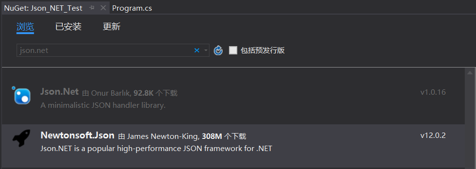
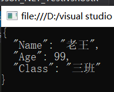
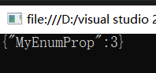

首先去官网下载最新的Newtonsoft.Json.dll（也可以使用VS自带的NuGet搜索Json.NET下载（下载下图第二个））并引用至项目。

using System;
using Newtonsoft.Json;
namespace Json_NET_Test
{
/// <summary>
/// 定义一个实体类
/// </summary>
public class Student
{
public string Name;
public int Age;
public string Class;
}
class Program
{
static void Main(string[] args)
{
//创建实体类对象
Student stu = new Student
{
Name = "老王",
Age = 99,
Class = "三班"
};
//开始序列化
string jsonStr = JsonConvert.SerializeObject(stu, Formatting.Indented);
Console.WriteLine(jsonStr);
}
}
}结果：

using System;
using Newtonsoft.Json;
namespace Json_NET_Test
{
/// <summary>
/// 定义一个实体类
/// </summary>
public class Student
{
public string Name;
public int Age;
public string Class;
}
class Program
{
static void Main(string[] args)
{
//Json字符串
string jsonStr = "{\"Name\": \"老王\",\"Age\": 99,\"Class\": \"三班\"}";
//开始反序列化
Student stu = JsonConvert.DeserializeObject<Student>(jsonStr);
}
}
}
[JsonObject(MemberSerialization.OptIn)]用于在序列化与反序列化时忽略一个类里所有的属性，只有当在类内属性上打特性标签[JsonProperty]时才支持序列化与反序列化。所以[JsonObject(MemberSerialization.OptIn)]常用于与[JsonProperty]配合使用。
例：
[JsonObject(MemberSerialization.OptIn)]
public class Person
{
public int Age { get; set; }
[JsonProperty]
public string Name { get; set; }
public string Sex { get; set; }
public bool IsMarry { get; set; }
public DateTime Birthday { get; set; }
}
默认实体类上默认打着[JsonObject(MemberSerialization.OptOut)]特性标签（可以省略不写），如果要忽略某些属性，要在属性上打[JsonIgnore]。
例：
[JsonObject(MemberSerialization.OptOut)]
public class Person
{
public int Age { get; set; }
public string Name { get; set; }
public string Sex { get; set; }
[JsonIgnore]
public bool IsMarry { get; set; }
public DateTime Birthday { get; set; }
}
当某些条件下需要序列化A属性和B属性，某些情况下需要忽略A属性与B属性，我们该怎么做？
答：使用JsonSerializerSettings设置某实体类对象要忽略序列化的属性（配合if与else控制属性的动态忽略）。
例：以下方式忽略p对象的Age属性与IsMarry属性：
JsonSerializerSettings jsetting=new JsonSerializerSettings();
jsetting.ContractResolver = new LimitPropsContractResolver(new string[] { "Age", "IsMarry" });
Console.WriteLine(JsonConvert.SerializeObject(p, Formatting.Indented, jsetting));
在属性上打 [DefaultValue("xxx")]
3.空值处理
Person p = new Person
{
room = null,
Age = 10,
Name = "张三丰",
Sex = "男",
IsMarry = false,
Birthday = new DateTime(1991, 1, 2)
};
JsonSerializerSettings jsetting=new JsonSerializerSettings();
jsetting.NullValueHandling = NullValueHandling.Ignore;
Console.WriteLine(JsonConvert.SerializeObject(p, Formatting.Indented, jsetting));ps：使用这种方式可能bool为false的也无法序列，最后的结果只包含Birthday、Sex、Name、Age。
[JsonProperty(NullValueHandling=NullValueHandling.Ignore)]
public Room room { get; set; }
因为默认只序列化public的成员，所以如果想序列化private成员，要在实体类的属性上打[JsonProperty]标签。
[JsonProperty]
private int Height { get; set; }
5.自定义序列化名称
在序列化与反序列化时可以自定义序列化出字符串的属性名称，如下代码可以将实体类的Name属性序列化为CName属性，并且可以将Json中的CName反序列化为当前实体类的Name属性。（双向）
[JsonProperty(PropertyName = "CName")]
public string Name { get; set; }
6.日期处理
系统自带的DateTime会格式化成iso日期标准，但是实际使用过程中大多数使用的可能是yyyy-MM-dd 或者yyyy-MM-dd HH:mm:ss两种格式的日期，解决办法是可以将DateTime类型改成string类型自己格式化好，然后在序列化。
例：
[JsonProperty(PropertyName = "startTime")]//因为默认只序列化public属性，所以要打上JsonProperty标签并且声明名称
private string m_StartTime{get;set;}
[JsonIgnore]//这个标签用于在序列化与反序列化时忽略StartTime属性
public DateTime StartTime
{
get{ return Convert.ToDateTime(m_StartTime); }
set
{
DateTime time = value;
m_StartTime = time.ToString("yyyy-MM-dd");//这里写自己想要的格式
}
}ps:代码思路是不去序列化StartTime属性，而去序列化string类型的m_StartTime属性（m_StartTime相当于StartTime属性的私有字段）。
Json.Net提供了IsoDateTimeConverter日期转换这个类，可以通过JsnConverter实现相应的日期转换
[JsonConverter(typeof(IsoDateTimeConverter))]
public DateTime Birthday { get; set; } 但是IsoDateTimeConverter日期格式（yyyy-MM-ddTHH:mm:ss）不是我们想要的，我们可以继承该类实现自己的日期
例：
public class ChinaDateTimeConverter : DateTimeConverterBase
{
private static IsoDateTimeConverter dtConverter = new IsoDateTimeConverter { DateTimeFormat = "yyyy-MM-dd" };
public override object ReadJson(JsonReader reader, Type objectType, object existingValue, JsonSerializer serializer)
{
return dtConverter.ReadJson(reader, objectType, existingValue, serializer);
}
public override void WriteJson(JsonWriter writer, object value, JsonSerializer serializer)
{
dtConverter.WriteJson(writer, value, serializer);
}
}使用方式：
[JsonConverter(typeof(ChinaDateTimeConverter))]
public DateTime Birthday { get; set; }
7.以驼峰命名法序列化
有时我们会碰到这种需求，比如我们代码里实体类型的属性名称均是以大写字母开头，如Name、StartTime等，但是要求我们序列出的Json字符串的属性名称要以小写字母开头，如name、startTime、endTime等。我们可以使用如下代码解决
JsonSerializerSettings setting = new JsonSerializerSettings();
setting.ContracResolver = new CamelCasePropertyNamesContractResolver();
string jsonStr = JsonConvert.Serializeobject(p, Newtonsoft.json.Formatting.Indented, setting);这样子的话，在序列实体类对象p的属性时，属性名称将由PersonName转换为personName。
8.枚举的序列化
枚举默认序列化为枚举的Int值，如果想要序列化为枚举string值，使用如下方式
9.将多个数据类型序列化为1个Json对象（序列化匿名类）
有时我们有这样的需求，对方要求我们传输过去的Json字符串要包含我们多个实体类型的信息，笨方法就是重新构建一个符合要求的实体类型，但是我们又更好的方法，我们可以使用匿名类，把Json需要的信息均放在匿名类中，我们可以对匿名类进行序列化。
例：
List<Model> list1 = new List<Model>();
List<Model2> list2 = new List<Model2>();
string name = "名字";
string address = "xx";
List<string> info = new List<string>() { name, address };
var json = new { information = info, jsonList1 = list1, jsonList2 = list2 }; 我们只需要对上面的匿名对象“json”序列化即可。
10.使用JsonConverter自定义属性序列化规则（json格式转换器）
public class DoubleToStringConverter : JsonConverter
{
//表示反序列化时不执行该转换器
public override bool CanRead => false;
//表示序列化时执行该转换器
public override bool CanWrite => true;
//判断执行条件（当属性的值为double类型时才使用转换器）
public override bool CanConvert(Type objectType)
{
return objectType == typeof(double);
}
//因为public override bool CanRead => false;，所以不用实现反序列化时的转换方法
public override object ReadJson(JsonReader reader, Type objectType, object existingValue, JsonSerializer serializer)
{
throw new NotImplementedException();
}
/// <summary>
/// 序列化时执行的转换
/// </summary>
/// <param name="writer">可以用来重写值</param>
/// <param name="value">属性的原值</param>
/// <param name="serializer">就是那个serializer对象</param>
public override void WriteJson(JsonWriter writer, object value, JsonSerializer serializer)
{
double v = (double)value;
writer.WriteValue(v.ToString());
}
}使用方式：
[JsonConverter(typeof(DoubleToStringConverter))]
public double Count{get;set;} ps:这样子，就可以把原本序列化出的Json字符串 Count : 12.3 转化为 Count : "12.3"
ps:[JsonConverter(typeof(DoubleToStringConverter))]也可以打在类上，表示全局设置
为什么要进行这样的转换呢？
因为枚举类型在序列化时默认序列化为枚举的int类型，即如下代码：
/// <summary>
/// 自定义一个枚举类型
/// </summary>
public enum MyEnum
{
aaa = 1,
bbb = 2,
ccc = 3
}
/// <summary>
/// 实体类（类内有一个枚举类型的属性MyEnumProp）
/// </summary>
public class Person
{
public MyEnum MyEnumProp { get; set; }
}
class Program
{
static void Main(string[] args)
{
Person p = new Person() { MyEnumProp = MyEnum.ccc };
//Json字符串
string jsonStr = JsonConvert.SerializeObject(p);
//开始反序列化
Console.WriteLine(jsonStr);
Console.ReadLine();
}
}结果为：

有时候会有这样的需求，序列化出的属性值均要为字符串格式，即要将上图结果的3改为"3"。这时候就需要自定义转换了！
代码如下：
public class EnumToIntStringConverter : JsonConverter
{
//反序列化时不执行
public override bool CanRead => false;
//序列化时执行
public override bool CanWrite => true;
//控制执行条件（当属性的值为枚举类型时才使用转换器）
public override bool CanConvert(Type objectType)
{
return objectType == typeof(Enum);
}
//因为public override bool CanRead => false;，所以不用实现反序列化时的转换方法
public override object ReadJson(JsonReader reader, Type objectType, object existingValue, JsonSerializer serializer)
{
throw new NotImplementedException();
}
/// <summary>
/// 序列化时执行的转换
/// </summary>
/// <param name="writer">可以用来重写值</param>
/// <param name="value">属性的原值</param>
/// <param name="serializer">就是那个serializer对象</param>
public override void WriteJson(JsonWriter writer, object value, JsonSerializer serializer)
{
Enum e = (Enum)value;
int v = Convert.ToInt32(e);
writer.WriteValue(v.ToString());
}
} 使用方法同上例。